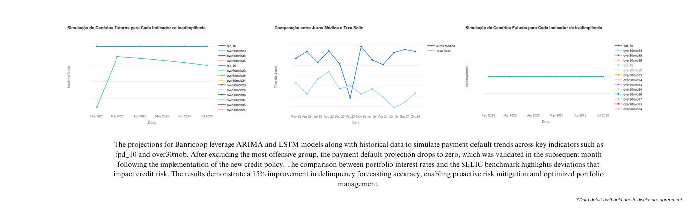

About Me
I am a Data Science Specialist with over 7 years of experience in data engineering, machine learning, and advanced analytics. I specialize in deploying scalable solutions on cloud platforms, building state-of-the-art machine learning models, and integrating data engineering pipelines. My focus is on delivering actionable insights and optimizing business processes using cutting-edge technologies.
Professional Experience
-
Senior Data Scientist - Tech Lead at CESAR
June 2024 - Present
Technical lead in telematics projects, leveraging Machine Learning models and AWS solutions (EC2, EMR, SageMaker, Lambda, Glue) to process large-scale telemetric data, optimize operations, and enhance safety. Developed key features: Behavior Score for driver performance analysis, Relationship Score for vehicle-brand interactions, Attentive Driving for detecting inattentive patterns, Rollover Prediction for risk prevention, and Action Facing Alerts for real-time insights. Designed pipelines for data validation and collaborated with teams to deliver high-impact solutions.
-
Senior Data Scientist at 4intelligence
April 2023 - June 2024
Led the implementation of outlier detection algorithms and advanced statistical techniques for auditing large-scale data discrepancies for ANBIMA. As Tech Lead for the Credit & Risk Business Unit, developed ML-integrated solutions for credit portfolio management (Acquisition, Portfolio, Collection, FP&A) and database clustering. Designed scalable ETL pipelines for data preparation using Azure, GCP BigQuery, and Databricks. Applied machine learning models for credit risk prediction with TensorFlow and scikit-learn, leveraging expertise in Python and Spark to deliver efficient big data solutions.
-
Senior Data Scientist at Letsbank
July 2022 - May 2023
-Spearheaded the implementation of advanced metrics such as KS, Lift, Concordance, Default Rate, Expected Loss, VaR, and Risk Concentration, empowering portfolio managers to make informed credit policy decisions. Led portfolio analysis, credit strategy, and pricing initiatives for C-level stakeholders, including the development of behavioral models for major portfolios like Coca-Cola (Sorocaba Refrescos) and Heineken. Designed and implemented cloud-based data marts and automation processes using AWS (Glue, EMR, Lambda) and Azure (Blob Storage), integrating resource engineering strategies to optimize performance. Developed and fine-tuned ML classification models for enhanced credit risk assessment and portfolio management, leveraging Apache Airflow and AWS Glue to improve data quality and model accuracy, supported by robust data structures in SQL, Python, Docker, and Kubernetes.
-
Senior Data Scientist Lead at StudioBank
February 2021 - April 2022
Implemented and monitored advanced metrics such as KS, Sharpe, Treynor, Lift, Concordance, Default Rate, Recovery Rate, Expected Loss, Realized Loss, Coverage Index, Portfolio Turnover, Net Interest, and Risk Concentration, providing strategic support for credit policy decisions. Designed project roadmaps, pipelines, and managed agile teams, coordinating interdisciplinary efforts to integrate ML classification (sklearn) and resource engineering processes. Developed behavioral ensemble classification model (XGBoost, LightGBM) for credit and financial service users, refining data and enhancing model outcomes to improve customer scores and pricing strategies. Led AI-driven process automation initiatives for customer classification and optimized data entry workflows to ensure data quality and consistency, driving operational efficiency and impactful decision-making.
-
Analytics Consultant at Guara
January 2017 - Now
Developed predictive models combining ARIMA and LSTM for financial forecasting. Enhanced decision-making with data-driven insights and implemented transfer learning for NLP tasks.
-
Business Intelligence Consultant at LDM Engenharia
February 2020 - February 2021
Implemented IoT-based real-time data capture and visualization dashboards for Petrobras. Designed end-to-end data warehouses and integrated live performance monitoring systems.
-
Data Analyst at Lofrano & Associados
January 2017 - January 2020
Developed financial control solutions and implemented predictive analytics for clients, including Unimed, Ambev, and Anglo American. Focused on building robust ETL processes and interactive dashboards.
Highlighted Cases
Behavior Score and Rollover Prediction for Volkswagen Truck and Bus
Developed predictive models for rollover risks, achieving 92% accuracy by leveraging advanced neural networks trained on telemetry data. The feature uses telemetry readings to create proxies for vehicle inclination, enabling real-time risk assessment. Every time the vehicle exceeds safe inclination thresholds, alerts are sent both to fleet managers via a web application and to drivers through in-vehicle messaging systems, enhancing safety and enabling proactive interventions. Additionally, designed the Behavior Driving Score, a dynamic scoring system that penalizes poor driving practices and rewards good behavior. The model accounts for different vehicle usage patterns, ensuring fair assessments while promoting safer and more efficient driving habits.

ANBIMA Data Steward, Fraud and Outlier Detection
Led the design and implementation of a proprietary data quality auditing system for ANBIMA, leveraging the ANBIMA DATA platform. This involved curating datasets in earlier stages of the project and deploying an ECOD (Empirical Cumulative Outlier Detection) methodology to identify discrepancies in large-scale financial data. The system generated a Data Quality Bulletin, enabling compliance by auditing critical metrics and preventing errors in official reports and company disclosures. This solution, akin to IBM's InfoSphere, was tailored to ANBIMA's specific requirements and integrated directly into their workflow, ensuring reliable data pipelines and actionable insights for high-stakes decision-making.
Delinquency Reduction for BANRICOOP
Implemented advanced credit risk modeling techniques, achieving a 15% reduction in delinquency rates by integrating external risk data and deploying machine learning models. The project involved developing a robust data pipeline to merge internal portfolio information with external sources such as SELIC rates, ensuring comprehensive risk assessment and accurate predictions. Advanced algorithms were implemented to identify high-risk "offender groups" through correlation analysis and aggregation by dimensions such as age, salary, and payment methods, enabling targeted mitigation strategies. Ensemble predictive models, including ARIMA and LSTM, were used to forecast delinquency indicators over multiple time horizons, such as over30mob and over60mob, allowing proactive management of portfolio risks.
Credit Score Models for Financial Institutions
Designed and deployed credit scoring systems for Letsbank, StudioBank, MBank (Marisa's Retail Company), and Origo Energy, achieving a 28% KS2 improvement per state of operation. Models utilized relative risk methodologies, integrating socioeconomic data to identify regional delinquency patterns. The systems dynamically adjusted scores based on state-specific risk factors, enabling precise segmentation and targeted mitigation strategies, reducing delinquency rates and optimizing portfolio performance.
ML-Based Quality System for Unimed
Developed a machine learning-driven quality assurance system, optimizing error detection and ensuring compliance with medical regulations.
Top Skills
- Advanced Machine Learning (XGBoost, LightGBM, CatBoost, Statsmodels, TensorFlow, Keras, PyTorch, and Theano)
- Cloud Platforms (AWS, Azure, GCP)
- Data Engineering (SQL, Spark, Databricks, R, ETL pipelines)
- Data Visualization (Tableau, Power BI, Looker)
Education
-
Bachelor's Degree in Linguistics
Universidade Federal de Ouro Preto
-
Bachelor's Degree in Statistics
Centro Universitário FMU | FIAM-FAAM
-
Specialization in Data Science
Tecnológico de Monterrey
-
Advanced Credit Analysis
TU Delft
Contact
- Phone: +55 19 99795-1576
- Email: mateus.lofrano@outlook.com
- LinkedIn: linkedin.com/in/mateus-lofrano